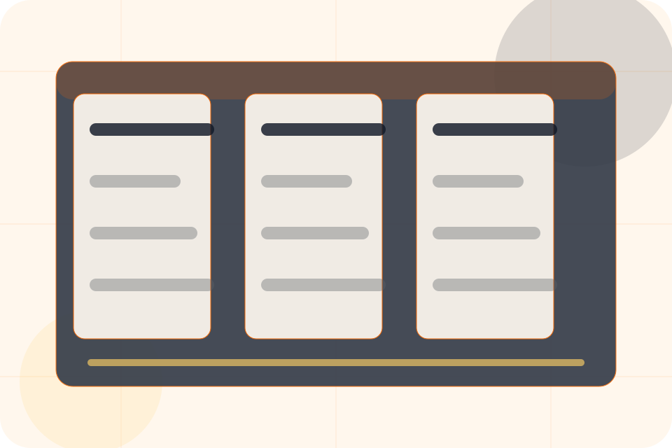

Best Fit
Who should use renovation and when it belongs in the services journey.
Services / 01
Services opens as a clear construction decision hub: what Forge offers, who it helps, why it matters, and which route to take first.
The first screen combines positioning, proof, primary action, and fast internal navigation, so people can act immediately or compare the rest of the services route with context.
Worksite software hero
Select the closest route and Forge keeps the next step, proof, and follow-up expectation aligned with certainty around cost and disruption.

Services / 02
Newbuild explains the practical scope, best-fit situations, and expected outcome so construction visitors can compare options without decoding jargon.
The section keeps the offer concrete: what is included, who it is best for, what decision it supports, and which linked route gives the deeper detail.
Explore ServicesForge structures newbuild around best fit, what changes, and a clear next route so visitors can compare the block quickly before they request an estimate.
Request EstimateServices / 03
Renovation explains the practical scope, best-fit situations, and expected outcome so construction visitors can compare options without decoding jargon.
The section keeps the offer concrete: what is included, who it is best for, what decision it supports, and which linked route gives the deeper detail.
Explore ServicesWho should use renovation and when it belongs in the services journey.
The practical benefit visitors should expect after choosing this route.
Where to compare details, pricing, support, or contact options before committing.
Services / 04
Extension explains the practical scope, best-fit situations, and expected outcome so construction visitors can compare options without decoding jargon.
The section keeps the offer concrete: what is included, who it is best for, what decision it supports, and which linked route gives the deeper detail.
Explore ServicesWho should use extension and when it belongs in the services journey.
Services / 05
Repair explains the practical scope, best-fit situations, and expected outcome so construction visitors can compare options without decoding jargon.
The section keeps the offer concrete: what is included, who it is best for, what decision it supports, and which linked route gives the deeper detail.
Explore ServicesWho should use repair and when it belongs in the services journey.
The practical benefit visitors should expect after choosing this route.
Where to compare details, pricing, support, or contact options before committing.
Services / 06
Commercial explains the practical scope, best-fit situations, and expected outcome so construction visitors can compare options without decoding jargon.
The section keeps the offer concrete: what is included, who it is best for, what decision it supports, and which linked route gives the deeper detail.
Explore ServicesWho should use commercial and when it belongs in the services journey.
The practical benefit visitors should expect after choosing this route.
Where to compare details, pricing, support, or contact options before committing.
Services / 07
Residential explains the practical scope, best-fit situations, and expected outcome so construction visitors can compare options without decoding jargon.
The section keeps the offer concrete: what is included, who it is best for, what decision it supports, and which linked route gives the deeper detail.
Explore ServicesWho should use residential and when it belongs in the services journey.
The practical benefit visitors should expect after choosing this route.
Where to compare details, pricing, support, or contact options before committing.
Services / 08
Benefits defines the better state Forge is built to create, with enough detail to make the promise believable.
A build-management site with construction CTAs, project panels, safety proof, and estimate routing. The section grounds that direction in concrete benefits, visible tradeoffs, and a next route visitors can use when the promise feels relevant.
Explore ServicesBenefits defines what becomes clearer, easier, or safer when Forge is the chosen route.
Services / 09
Scope explains the practical scope, best-fit situations, and expected outcome so construction visitors can compare options without decoding jargon.
The section keeps the offer concrete: what is included, who it is best for, what decision it supports, and which linked route gives the deeper detail.
Explore ServicesWho should use scope and when it belongs in the services journey.
The practical benefit visitors should expect after choosing this route.
Where to compare details, pricing, support, or contact options before committing.
Services / 10
Forge closes the services route with a clear action, a quick reminder of the value, and a low-friction way to request an estimate.
Visitors who are ready can use the primary action. Visitors who are still comparing can scan the section links, proof, and support routes before they request an estimate.
Request EstimateThe final block keeps the choice simple: act now, compare one more proof route, or send enough detail for a focused response.
Request Estimatecertainty around cost and disruption
A build-management site with construction CTAs, project panels, safety proof, and estimate routing. Services ends with a direct path to request an estimate, plus enough context for visitors who still need to compare.
Information is provided for planning and should be reviewed for the final client, location, and operating rules.